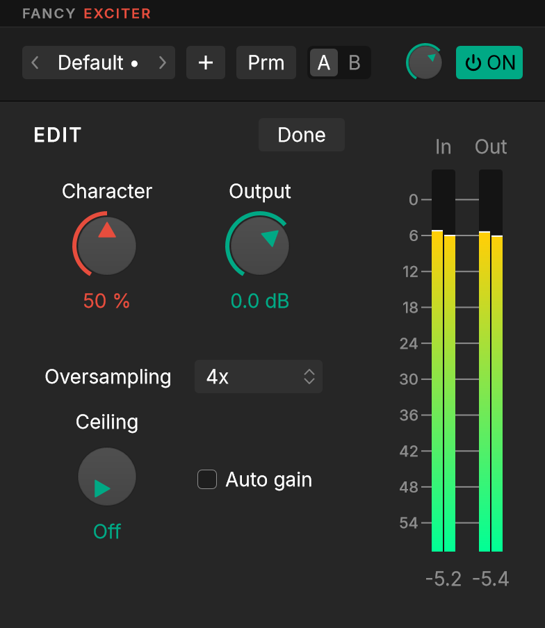

Fancy Exciter: Phase 4 Wave 2 mockup
docs/exciter.md, Phase 4 Wave 2: two bands, Punch, a high cut, harmonics width and minimum-phase oversampling (items 40 to 44), Decisions 1 to 4 A. New things in dashed yellow, on the plugin's real screenshot (1x coordinates).
1 · The EDIT drawer, page Main
The drawer's title becomes two pages, Main | Harmonics, as Sature's drawer gets. Main keeps today's controls and adds Oversampling filter (Linear phase, the default, or Minimum phase) under Oversampling; Ceiling and Auto gain move down a row.

Oversampling filter
Linear
Minimum phase cuts the latency from 69 samples to a few, but the parallel sum then loses up to 0.7 dB near the top, which the tooltip says. The main window keeps its four knobs and its size.
2 · The EDIT drawer, page Harmonics
Band 2: Freq 2 (100 Hz up to Freq) and Harmonics 2 (0 to 100 %, 0 by default). Punch (0 to 100 %), High cut (Off, or 4 to 20 kHz; Off by default) and Width (0 to 150 %, 100 % by default).
BAND 2
Adds harmonics from Freq 2 up to Freq: warmth and body under today's band.
SHAPE
Punch lifts the harmonics on attacks; High cut and Width act on the added harmonics only.
Every new setting defaults to today's sound, to the bit: Harmonics 2 at 0 isn't run, Punch 0, High cut Off, Width 100 %, Linear phase.